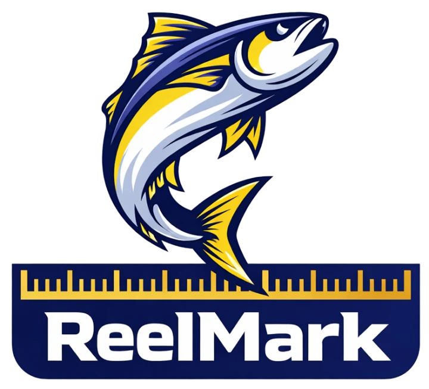

Now in beta on TestFlight
Confidence in Every Cast
The California ocean sport fishing regulations app for iPhone. Size limits, bag limits, seasons and Marine Protected Areas, checked in seconds from the boat, the pier or the beach.
What’s inside
Everything you check before you keep a fish.
Regulations come first. The rest helps you find the right rule and remember the day.
-
Regulations lookup
Search any California ocean species for its size limit, bag limit and open season, summarized from the California Department of Fish and Wildlife regulations. Clear answers, written for anglers who already know fish.
-
MPA map with proximity alerts
See Marine Protected Area boundaries on the map. While the app is open, it shows how close you are to the nearest MPA and tells you when you’re inside one.
-
Fish ID
Not sure what’s on the deck? Take a photo to get a likely species and its regulations. You confirm the ID before anything is logged.
-
Salty, your regulations guide
Ask a question in plain English, like whether sheephead are open this month, and get a straight answer about seasons, limits and closures.
-
Catch log, tides & conditions
Log species, length, weight, photo and spot, kept or released. Check NOAA tides, weather and ocean conditions for where you’re fishing.
Fish ID and Salty are AI-powered, using Claude by Anthropic. They’re optional, and you always confirm the species and the rules yourself.
Join the beta
Fish with us before launch.
ReelMark is in beta on TestFlight, Apple’s app for trying new iPhone apps before they reach the App Store. Send us a note and we’ll email you an invite.
Requires an iPhone. Or write to support@reelmark.fish directly.
32.7157° N, 117.1611° W
Built in San Diego by an angler.
ReelMark started with a simple wish: that the rules would be as easy to check as the tide. It’s made in San Diego by someone who fishes these waters, for anglers up and down the California coast.
The app speaks English, Español, 한국어, Tiếng Việt and 中文.